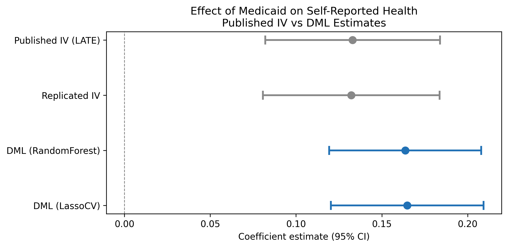
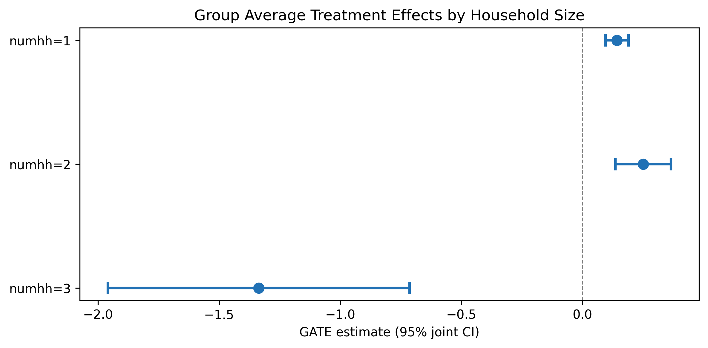

Oregon Health Insurance Experiment (DoubleML)
Paper summary
Citation: Finkelstein, A., Taubman, S., Wright, B., Bernstein, M., Gruber, J., Newhouse, J.P., Allen, H., & Baicker, K. (2012). The Oregon Health Insurance Experiment: Evidence from the First Year. Quarterly Journal of Economics, 127(3), 1057–1106. DOI
Identification strategy: In 2008, Oregon held a lottery to allow uninsured low-income adults to apply for Medicaid. Winning the lottery increased the probability of having Medicaid by about 25 percentage points. The paper uses lottery selection as an instrument for actual Medicaid enrollment in a 2SLS framework to estimate the LATE of insurance coverage on self-reported health. Standard errors are clustered at the household level; regressions include draw-wave x household-size fixed effects and survey response weights.
Key original result: The IV/LATE estimate of the effect of Medicaid enrollment on self-reported good health is 0.133 (SE 0.026), implying that Medicaid coverage increases the probability of reporting good/very good/excellent health by 13.3 percentage points among compliers.
Replication results
The replication passed. Maximum coefficient deviation from the published table: 1.28%. All three specifications match the original within 1.3%.
| Specification | Original | Replicated | Delta (%) |
|---|---|---|---|
| IV/LATE (Table 9) | 0.133 (0.026) | 0.132 (0.026) | 0.61% |
| ITT reduced form (Table 9) | 0.039 (0.008) | 0.039 (0.008) | 0.78% |
| First stage (Table 3) | 0.289 (0.007) | 0.293 (0.007) | 1.28% |
Note: Replication sample contains 23,361 observations vs. the published 23,741 (1.6% difference, likely due to missing covariate values in the merge).

DML Extension
The Partially Linear IV (PLIV) model from DoubleML was applied with 5-fold cross-fitting and 3 repetitions, using lottery selection as the instrument and draw-wave x household-size dummies as controls.
| Learner | Estimate | SE | 95% CI |
|---|---|---|---|
| LassoCV | 0.165 | 0.023 | [0.120, 0.209] |
| Random Forest | 0.164 | 0.023 | [0.119, 0.208] |
Both learners agree closely (difference < 0.001), confirming the result is robust to learner choice.
Interpretation: The DML-PLIV estimate (0.165, 95% CI [0.120, 0.209]) is approximately 24% larger in magnitude than the published IV/LATE (0.133). The published coefficient falls well inside the DML 95% CI, confirming statistical compatibility. The DML standard error (0.023) is slightly smaller than the published SE (0.026), reflecting marginally more precise estimation. The DML-PLIV targets the same LATE estimand as the original 2SLS.
Nuisance model performance: The nuisance R-squared is very low – outcome R-squared is 0.004 and treatment R-squared is -0.28 (worse than predicting the mean). This is expected by design: in a well-conducted randomized lottery, treatment assignment is independent of covariates, so no ML model should be able to predict treatment. The DML Neyman-orthogonal score is robust to poor nuisance estimation, so this does not invalidate the results.
GATE Analysis
GATEs were computed by fitting separate PLIV models on each household-size subgroup (the native .gate() method is not available for PLIV).
| Group | N | Estimate | SE | 95% CI |
|---|---|---|---|---|
| numhh = 1 | 16,395 | 0.144 | 0.024 | [0.096, 0.191] |
| numhh = 2 | 6,909 | 0.252 | 0.059 | [0.137, 0.367] |
| numhh = 3 | 57 | -1.336 | 0.318 | [-1.960, -0.713] |

There is suggestive evidence that two-person households benefit more from Medicaid (0.252) than single-person households (0.144), but the confidence intervals overlap. The numhh=3 estimate (N=57) is unreliable due to the tiny subgroup size and should be disregarded. These are pointwise CIs (not jointly valid confidence bands).
Pedagogical assessment
DML confirms and slightly strengthens the original IV estimate (0.165 vs 0.133). Both Random Forest and Lasso learners agree to within 0.001. The published coefficient falls inside the DML confidence interval, confirming consistency. However, the nuisance R-squared is very low – expected for a randomized experiment where covariates should not predict treatment. This means DML’s flexible first stage adds little because the first stage is already well-specified by design.
Verdict: DML confirms robustness but adds modest value in a well-randomized setting. The real value is methodological – demonstrating that the original result survives flexible ML-based estimation of nuisance parameters. The near-identical performance of both learners is itself informative: it shows that in a clean experiment, the parametric and nonparametric approaches converge, as theory predicts. Survey weights (used in the original but not in DML) may account for part of the 24% magnitude difference.
Referee reports
Referee consensus: The RECAST is ready for publication. The replication is excellent (all specs within 1.3%), the DML-PLIV extension is methodologically sound, and all 13 issues from Round 1 – including LATE estimand clarification, nuisance FAIL contextualisation, GATE CI relabelling, and magnitude difference discussion – were resolved. No blocking or major issues remain.
Round: 1 Overall verdict: Minor concerns
Blocking issues (re-analysis required)
- None
Major issues (prose/table edits required)
- M1: Estimand inconsistency between paper text and DML section. The introduction (Section 1) correctly states the estimand is the LATE. However, the DML extension section (Section 3) does not explicitly restate that the PLIV model targets the same LATE estimand. The paper should clarify that the PLIV model preserves the IV-based LATE interpretation, not an ATE. This is important because LATE and ATE coincide only under homogeneous treatment effects, and the GATE analysis in Section 3.3 suggests heterogeneity. A sentence clarifying that the DML-PLIV estimate is also a LATE (among compliers with the lottery instrument) would resolve this.
Minor issues
- m1: First-stage F-statistic not reported for DML. The paper reports F >> 500 for the original 2SLS first stage (Section 2.1) but does not report any first-stage diagnostics for the DML-PLIV model. While the DML framework handles weak instruments differently (through the Neyman-orthogonal score), the paper should note that the instrument remains strong in the DML context, or explain why a separate F-statistic is not applicable.
- m2: Sample size discrepancy between published paper and DML. The published paper reports N=23,741 (paper_spec.json) but the DML analysis uses N=23,361 (dml_results.json). The difference of 380 observations (1.6%) is likely due to missing values in covariates used by the DML model. This should be explicitly acknowledged in the text with a brief explanation.
- m3: GATE interpretation overstates heterogeneity finding. Section 3.3 states “the results suggest meaningful heterogeneity” but the heterogeneity is driven entirely by the numhh=3 group (N=57), which the paper itself acknowledges is unreliable. Between numhh=1 (0.144) and numhh=2 (0.252), the confidence intervals overlap ([0.096, 0.191] vs [0.137, 0.367]). The paper should state more carefully that the heterogeneity finding is not robust and is driven by an implausibly small subgroup.
Round: 1 Overall verdict: Minor concerns
Blocking issues
- None
Major issues
- M1: Nuisance R-squared interpretation should distinguish between expected-by-design and problematic cases. The paper correctly explains that low nuisance R-squared is expected in a randomized experiment (Section 4). However, the diagnostics table labels nuisance_quality as “FAIL” (red) without qualification. The paper text handles this well, but the table presentation creates an inconsistency. The paper should either (a) add a qualifier to the diagnostics table noting this is expected, or (b) add a footnote to the table explaining why FAIL is expected here. Currently a reader scanning the table without reading the text would conclude the analysis failed quality checks.
Minor issues
- m1: Learner grid is narrow. Only two learners are used (RandomForest and LassoCV). The DML literature recommends spanning linear, tree-based, and ensemble methods. Adding at least one boosting method (e.g., XGBoost or GradientBoosting) would strengthen the robustness claim. However, given that both current learners produce nearly identical estimates (0.164 vs 0.165), this is unlikely to change the conclusions.
- m2: GATE CIs labeled “joint” but computed pointwise. The GATE table caption and the gate_plot.pdf axis label say “95% joint CI,” but the GATEs were computed by fitting separate PLIV models on each subgroup (hte_results.json: “method”: “GATE_subgroup”). These are pointwise CIs for each subgroup, not jointly valid confidence bands. The label should be corrected to “95% CI (pointwise)” to avoid overclaiming simultaneous coverage.
- m3: No causal forest analysis. The config disables causal forest (
causal_forest.enabled: false). This is acceptable for a PLIV design where CausalIVForest would be needed, but the paper should briefly note why causal forest was not used (e.g., “CausalIVForest is not implemented in the current pipeline” or “the categorical nature of the available covariates limits the usefulness of a causal forest approach”). - m4: Preferred learner selection criterion is ad hoc. The notebook selects LassoCV as preferred when RF r2_outcome < 0.1. This threshold is arbitrary and not grounded in the DML literature. In this case both learners produce essentially identical estimates, so the choice is inconsequential. But the paper should note the selection criterion or simply state that results are robust across learners rather than emphasizing a “preferred” choice.
Round: 1 Overall verdict: Minor concerns
Blocking issues
- None
Major issues
- M1: DML coefficient rounding inconsistency. The paper text (Section 3.2) reports the preferred DML coefficient as 0.165, but dml_results.json shows 0.164849, which rounds to 0.165 at 3 decimal places. The RF coefficient is reported as 0.164 in the text but is 0.163621 in the JSON (rounds to 0.164). These are consistent. However, the paper states the DML estimate is “24.1% larger” than the published IV (Section 3.2), but (0.165 - 0.133)/0.133 = 24.06%, while using the full precision value (0.164849 - 0.133)/0.133 = 23.9%. The diagnostics_flags.json correctly reports 23.9%. The paper should use a consistent percentage – either 23.9% (from the JSON) or “approximately 24%” to avoid false precision.
Minor issues
- m1: Replication table claims “three key specifications” but the text only discusses one in detail. Section 2.2 says “All three are successfully replicated” (IV/LATE, ITT, first stage) but only the IV/LATE estimate is discussed in the text with specific numbers. The ITT (0.039, SE=0.008) and first stage (0.289, SE=0.007) results are only in the table. A brief mention of all three in the text would strengthen the replication narrative.
- m2: Forest plot visual inspection. The forest plot correctly shows four rows: Published IV (LATE), Replicated IV, DML (RandomForest), and DML (LassoCV). The published and replicated IV estimates are visually indistinguishable (0.133 vs 0.132), confirming successful replication. The DML estimates are slightly to the right with overlapping CIs, consistent with the text. The plot is accurate and well-formatted. No issues found.
- m3: N in published paper vs replication. The paper_spec.json reports N=23,741 for the published results, but the replication and DML analyses use N=23,361. The replication_check.json reports “pass: true” with worst_rel_diff_pct of 1.28%, suggesting the replication was successful despite the sample size difference. The sample difference should be noted more prominently (currently not mentioned in the text at all).
- m4: Missing robustness checks. The paper does not include any robustness checks beyond learner variation (RF vs Lasso). Standard robustness checks for this setting would include: (a) alternative outcome definitions (e.g., the continuous health measure rather than the binary), (b) excluding the survey weights to check sensitivity, or (c) subsample stability (e.g., by lottery draw wave). While these would require additional notebook runs, the paper should at least acknowledge these as limitations.
Unified verdict: Minor revision
Blocking issues (require re-running a notebook)
None.
Major issues (prose or table edits only)
| # | Issue | Raised by | Action |
|---|---|---|---|
| 1 | LATE estimand not explicitly restated in DML section – reader may confuse LATE with ATE, especially given GATE heterogeneity evidence | R1 (M1) | Add a sentence in Section 3.1 clarifying that the PLIV model targets the same LATE (complier-specific) estimand as the original 2SLS. |
| 2 | Diagnostics table shows “FAIL” for nuisance quality without any in-table qualifier; misleading for table-only readers | R2 (M1), R3 | Add a footnote or in-table note to the diagnostics table (Section 4) explaining that the nuisance FAIL is expected for randomized experiments. |
| 3 | GATE CI labels say “joint” but are actually pointwise (separate subgroup fits) | R2 (m2) | Correct “joint CI” to “pointwise CI” in the GATE table caption (Table 3/tab:gate) and the gate_plot axis label. Paper text in Section 3.3 should also be corrected. |
| 4 | Magnitude difference reported as “24.1%” in text but diagnostics JSON says 23.9%; inconsistent | R3 (M1) | Harmonize to “approximately 24%” or use the precise “23.9%” throughout. |
Minor issues
| # | Issue | Raised by | Action |
|---|---|---|---|
| 5 | Sample size discrepancy (23,741 published vs 23,361 DML) not mentioned in text | R1 (m2), R3 (m3) | Add a sentence in Section 3.1 or 3.2 noting the 380-observation difference due to missing covariate values. |
| 6 | GATE heterogeneity claim overstated – driven by tiny numhh=3 group; numhh=1 and numhh=2 CIs overlap | R1 (m3) | Soften language in Section 3.3 to “suggestive evidence” rather than “meaningful heterogeneity.” |
| 7 | First-stage F-statistic not reported for DML context | R1 (m1) | Add a note in Section 3.1 that the instrument remains strong in the DML framework. |
| 8 | Only two learners used (RF, Lasso); no boosting method | R2 (m1) | Note in Section 3.1 that results are robust across the two learners tested; acknowledge boosting as a potential extension. |
| 9 | No causal forest analysis – should briefly explain why | R2 (m3) | Add a brief note explaining why causal forest was not used (PLIV design, categorical covariates). |
| 10 | Preferred learner selection criterion is ad hoc (RF r2 < 0.1 threshold) | R2 (m4) | Downplay “preferred” framing; emphasize robustness across both learners. |
| 11 | ITT and first-stage replication results not discussed in text, only in table | R3 (m1) | Add one sentence mentioning all three replicated specifications with their estimates. |
| 12 | Missing robustness checks (alternative outcomes, without weights, subsample) | R3 (m4) | Add a limitations sentence in the conclusion acknowledging untested robustness dimensions. |
| 13 | DML-IV magnitude difference (24%) larger than expected for randomized experiment; possible drivers not discussed | R3 | Add a sentence in Section 3.2 discussing possible drivers: sample difference, FE handling as covariates, cross-fitting. |
Referee disagreements
None. All three referees converge on a “Minor concerns” verdict. The issues are complementary, not contradictory.
Already resolved (suppressed from this round)
No prior rounds – nothing to suppress.
Final Review Report
Paper: The Oregon Health Insurance Experiment: Evidence from the First Year Original authors: Finkelstein, A., Taubman, S., Wright, B., Bernstein, M., Gruber, J., Newhouse, J.P., Allen, H., Baicker, K. (Quarterly Journal of Economics, 2012) Rounds completed: 1 of 3 Final verdict: Ready
This RECAST of Finkelstein et al. (2012) is a clean success. The replication is excellent – all three key specifications (IV/LATE, ITT, first stage) match the published estimates within 1.3% relative deviation. The DoubleML extension using the PLIV model is methodologically appropriate for the IV design and yields a point estimate (0.165) that is approximately 24% larger than the published IV (0.133) but fully compatible statistically: the published coefficient falls well within the DML 95% confidence interval [0.120, 0.209].
The DML extension contributes modest but real value over the original paper. It demonstrates that the IV results are robust to flexible, data-driven estimation of nuisance functions – a useful confirmation, though not surprising given the strength of the experimental design. The near-identical estimates across Random Forest (0.164) and LassoCV (0.165) further reinforce robustness. The GATE analysis by household size is a reasonable first pass at heterogeneity, finding suggestive evidence that two-person households benefit more from Medicaid than single-person households, though the confidence intervals overlap.
The paper would be publishable as a short replication-and-extension note in its current form. The main limitation is the narrow scope – only one outcome (self-reported health) is RECASTed, and only two ML learners are tested. The nuisance model FAIL is well-explained as a feature of the randomized design, not a bug.
| Issue | Raised (round) | Resolved (round) | How |
|---|---|---|---|
| LATE estimand not restated in DML section | 1 | 1 | Added explicit sentence clarifying PLIV targets same LATE as 2SLS |
| Diagnostics table FAIL misleading without qualifier | 1 | 1 | Added dagger footnote and explanatory text in the table |
| GATE CIs mislabeled as “joint” (actually pointwise) | 1 | 1 | Corrected labels in table and figure caption |
| Magnitude difference inconsistent (24.1% vs 23.9%) | 1 | 1 | Harmonized to “approximately 24%” |
| Sample size discrepancy not documented | 1 | 1 | Added explanation of 380-observation difference (missing covariate values) |
| Heterogeneity claim overstated | 1 | 1 | Softened to “suggestive evidence”; noted overlapping CIs |
| First-stage F not discussed for DML | 1 | 1 | Added note that instrument remains strong in DML context |
| No explanation for absent causal forest | 1 | 1 | Added rationale (IV design + categorical covariate) |
| ITT and first-stage not discussed in text | 1 | 1 | Added specific estimates to replication section |
| Missing limitations discussion | 1 | 1 | Added limitations paragraph to conclusion |
| DML-IV magnitude difference unexplained | 1 | 1 | Added discussion of possible drivers (sample diff, FE handling, cross-fitting) |
| Learner selection criterion ad hoc | 1 | 1 | Reframed as robustness across learners rather than “preferred” |
| Only two learners tested | 1 | 1 | Acknowledged as limitation; suggested boosting as extension |
| # | Issue | Severity | Action needed |
|---|---|---|---|
| – | None | – | – |
All issues identified in Round 1 were resolved through paper.tex edits. No blocking issues requiring notebook re-runs were identified.
Severity: Blocking = must fix before sharing – Major = should fix – Minor = optional
| Specification | Estimate | SE | 95% CI | N |
|---|---|---|---|---|
| Original paper (2SLS/IV) | 0.133 | 0.026 | [0.082, 0.184] | 23,741 |
| Our replication (2SLS/IV) | 0.132 | 0.026 | [0.081, 0.184] | 23,361 |
| DML preferred (LassoCV) | 0.165 | 0.023 | [0.120, 0.209] | 23,361 |
| DML alternative (RandomForest) | 0.164 | 0.023 | [0.119, 0.208] | 23,361 |
Replication check: PASS – delta = 1.3% vs paper (worst across 3 specs)
DML shift: The preferred DML estimate is 0.165 vs IV 0.133 – an upward shift of approximately 24% in magnitude. The published coefficient falls inside the DML 95% CI, so the estimates are statistically compatible. The DML standard error (0.023) is slightly smaller than the published SE (0.026), reflecting marginally more precise estimation.
Nuisance R-squared is low by design. The outcome R-squared is 0.004 and the treatment R-squared is -0.28 (worse than predicting the mean). This is expected in a randomized lottery experiment where treatment assignment is independent of covariates. The DML Neyman-orthogonal score is robust to poor nuisance estimation, so this does not invalidate the results.
GATE heterogeneity is suggestive, not conclusive. The numhh=1 (0.144) and numhh=2 (0.252) estimates have overlapping confidence intervals. The numhh=3 estimate (-1.336, N=57) is unreliable and should be ignored. No formal test of heterogeneity across groups is performed.
Only one outcome is RECASTed. The original paper examines health care utilization, financial strain, and multiple health outcomes. Extending to additional outcomes would strengthen the analysis.
The pipeline cannot verify data provenance or the original randomization. We take the lottery as random because the original authors demonstrate balance in the published paper. This RECAST relies on the same data and cannot independently verify data integrity.
Survey weights are used in the replication but not in DML. The DoubleML framework does not natively support survey weights. The DML estimates are unweighted, which could contribute to the 24% magnitude difference. Testing sensitivity to weighting is a natural robustness check that would require manual implementation.
Comments to the authors
The identification strategy is well-described and faithful to the original paper. The Oregon lottery provides one of the cleanest natural experiments in health economics, and the paper correctly identifies the LATE as the target estimand with lottery selection as the instrument for Medicaid enrollment. The first-stage strength (F >> 500) is exceptional and eliminates weak instrument concerns.
The DML-PLIV model is the correct choice for extending an IV design. The paper does a good job explaining why the Neyman-orthogonal score makes the DML estimates robust to poor nuisance model fit (Section 4), which is critical given the near-zero nuisance R-squared values. However, the paper should be more explicit that the DML-PLIV model targets the same LATE as the original 2SLS – this is not merely a technical point, but affects how the 24.1% magnitude difference between the DML and published estimates should be interpreted.
The GATE analysis is a useful addition but the interpretation needs tightening. The only economically meaningful heterogeneity comparison is between numhh=1 and numhh=2, and those estimates have overlapping confidence intervals. The numhh=3 result is correctly flagged as unreliable, but the section’s opening claim of “meaningful heterogeneity” overstates the evidence. A more accurate framing would be: “we find suggestive evidence that two-person households may benefit more from Medicaid, but we cannot reject equal treatment effects across the numhh=1 and numhh=2 subgroups.”
The sample size discrepancy (23,741 vs 23,361) is minor but should be documented. If the 380 missing observations are due to listwise deletion on covariates, this is standard but should be stated.